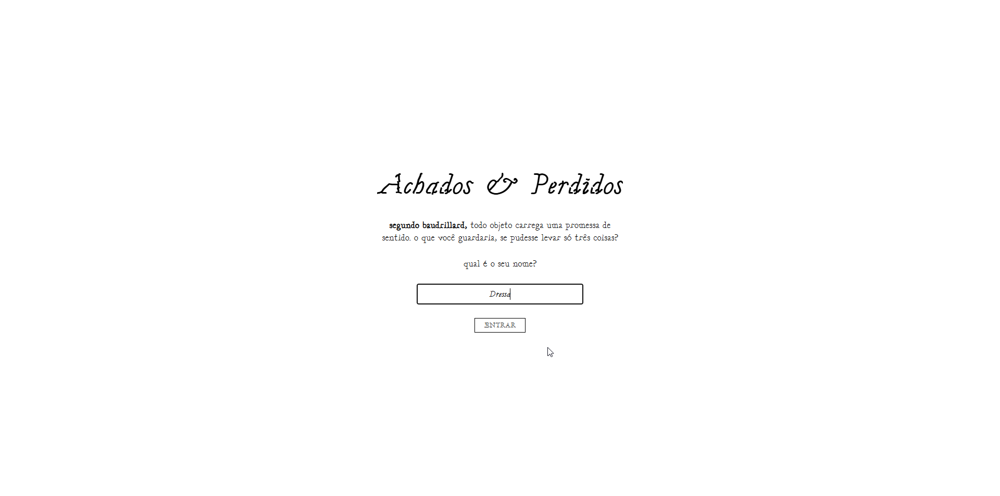
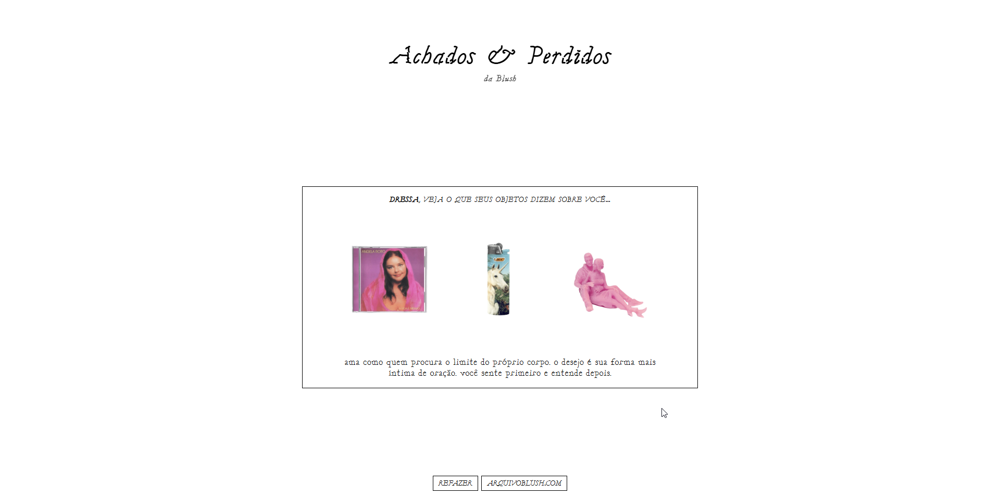

achados & perdidos
palavras · design · programação
achados & perdidos é um projeto de curadoria, design e programação que explora a internet como espaço sensível e afetivo. a coleção reúne atualmente 50 objetos garimpados online, enviados por colaboradoras ou provenientes da minha galeria, funcionando como signos em deriva: deslocados de seu valor de uso, transformam-se em símbolos de memória, desejo e nostalgia, em diálogo com a teoria de Baudrillard sobre simulação e hiper-realidade.

escolher é uma forma de confessar…

cada combinação de três objetos gera um texto único, de minha autoria, concebido como um oráculo: pequenos fragmentos que articulam sensibilidade, observação do cotidiano e reflexões sobre desejo e identidade.

desde o lançamento pela conta da blush, o projeto rapidamente viralizou, e a coleção continua crescendo, refletindo a circulação afetiva e performativa de signos na internet.
arquivoblush.neocities.org/achados
arquivoblush.neocities.org/achados
projeto em andamento, 2025-